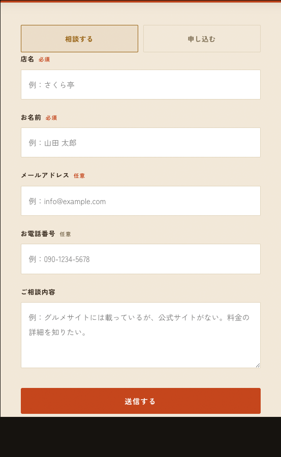
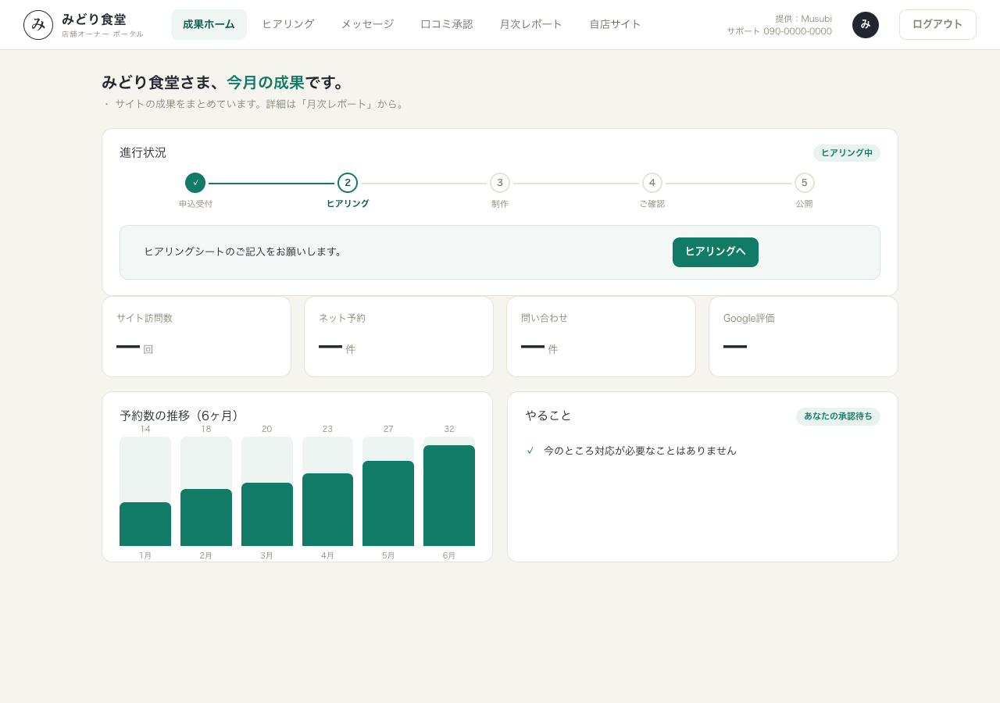
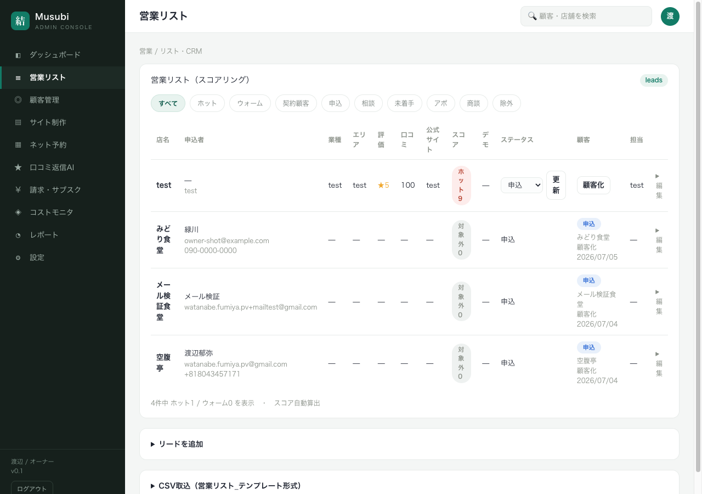
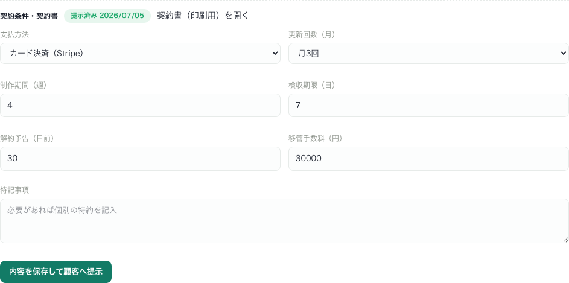
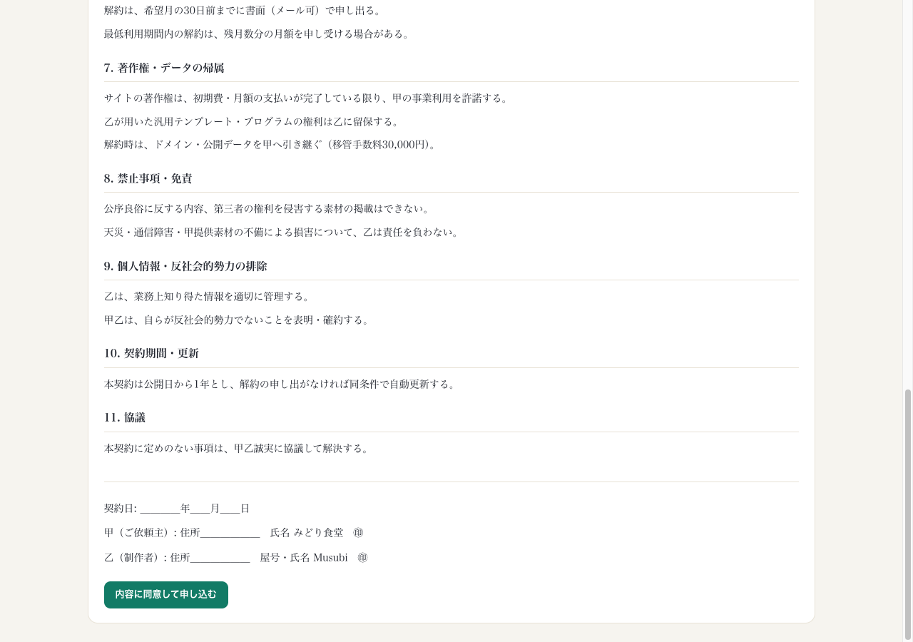
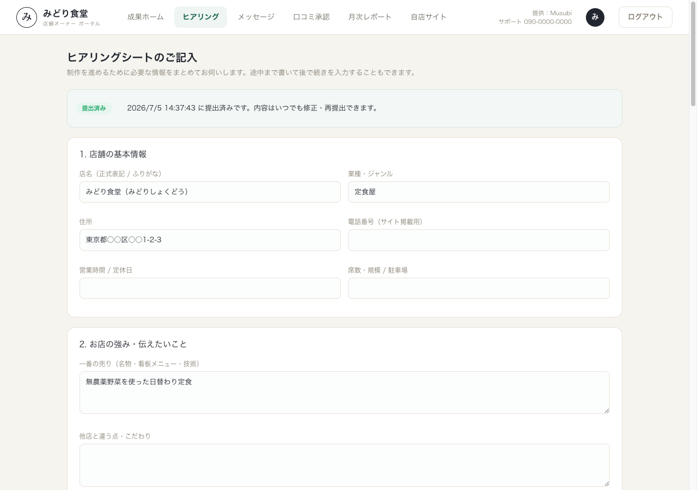
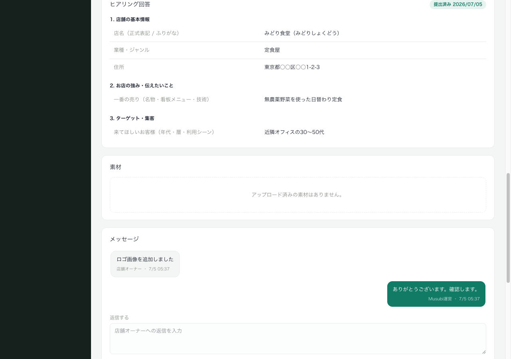
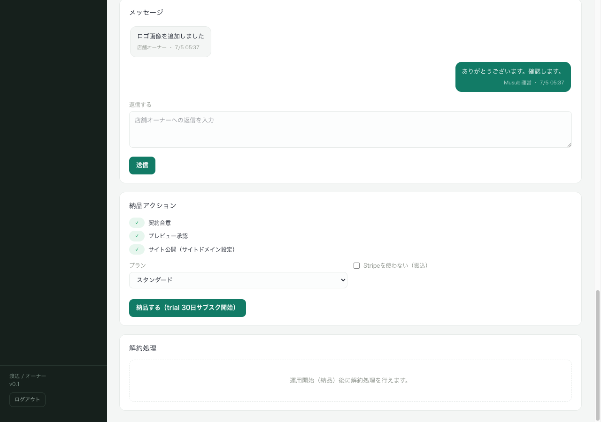
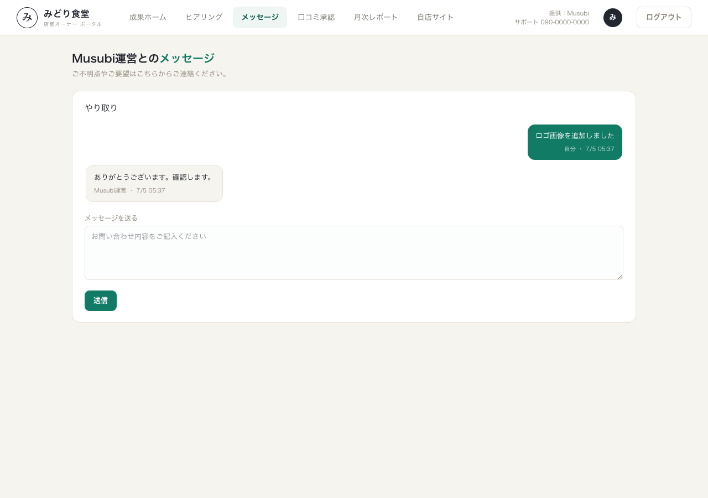
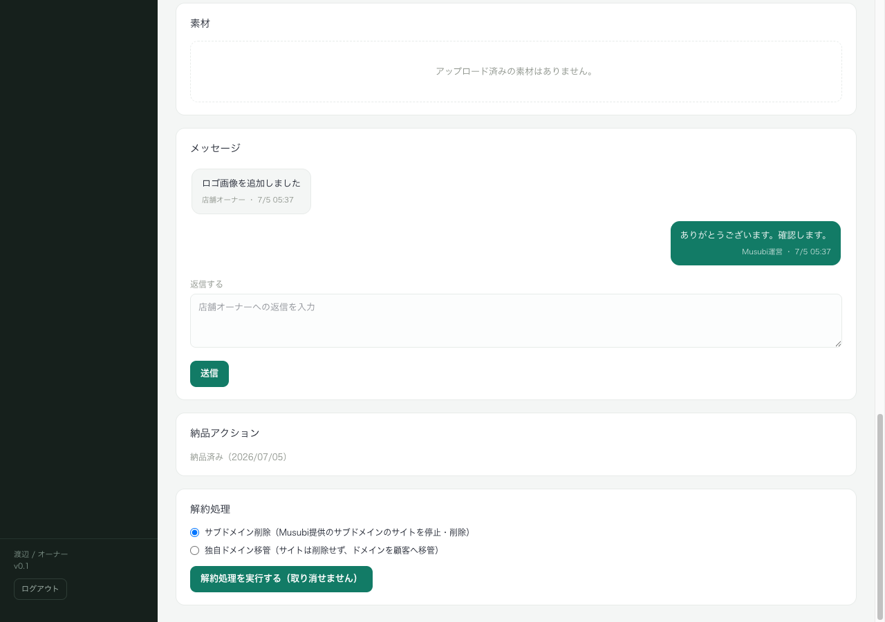

Musubi環境構築ドキュメント
Musubi環境構築ドキュメント運用手順書 — 申込からクロージングまで
Musubi（飲食店向け公式サイト制作・月額運用）の1顧客のライフサイクルを、申込からクロージング（解約・ドメイン処理）まで通しで実施するための手順書です。各ステップに「誰が」「どの画面で」「何をするか」「システムの挙動」「確認ポイント」を記載しています。
このドキュメント自体が、テスト（1周まわして最後まで到達できるか）のチェックリストを兼ねています。手作業や外部サービスでの対応が必要な箇所は「⚠️ 自社対応」と記し、詳細は 自社タスク一覧_手動対応事項.md に集約しています。
- 管理アプリ（admin）: https://musubi-admin-two.vercel.app （スタッフのみ・ログイン必要）
- 顧客ポータル（portal）: https://musubi-portal.vercel.app （顧客のみ）
- LP: https://musubiweb.com
フロー全体像
集客 → 申込 → 商談 → 契約提示 → 契約同意 → ヒアリング/素材 → 制作 → 公開
→ プレビュー承認 → 納品(課金開始) → 運用(レポート/口コミ/連絡) → 解約 → クロージング案件の状態は admin の案件詳細画面（/stores/[店舗ID]）で1本のステータスとして管理されます。ステータスと顧客向け表示名の対応:
- applied = 申込受付 / meeting = ご相談中 / contracted = 契約済み / hearing = ヒアリング中 / production = 制作中 / review = ご確認待ち / published = 公開中 / suspended = 一時停止 / cancelled・closed = 解約
0. 事前準備（初回のみ・自社対応）
運用開始前に、以下が設定済みであることを確認します。詳細は 自社タスク一覧_手動対応事項.md。
- ⚠️ 自社対応: Stripe 本番キーの用意（サブスク課金に使用。作成済みの料金プラン（price）と同じモードのキーであること）
- ⚠️ 自社対応: Stripe Webhook の設定（入金状況の同期用）
- ⚠️ 自社対応: 独自ドメインを扱う場合の Cloudflare 設定・レジストラ手続き
- ⚠️ 自社対応: Googleビジネスプロフィール（GBP）API の利用承認（口コミ返信の自動投稿に必要）
1. 集客・申込
誰が: 見込み客（飲食店オーナー）
画面: LP（https://musubiweb.com）
- オーナーが LP を見て、料金プランを選び「このプランで申し込む」または相談フォームから送信する。
- フォームには「相談する／申し込む」の種別、プラン、店名、担当者名、メール、電話、相談内容を入力。

システムの挙動:
- 申し込み（apply）の場合: CRM にリード登録 → ポータルアカウントの招待メールを自動送信 → 運営に通知メール。
- 相談（consult）の場合: CRM にリード登録 → 運営に通知メール（アカウント発行はなし）。
- 同じメールで再送信しても重複リードは作らず、既存リードにまとめる。
確認ポイント:
- admin
/crmに「申込」または「相談」ステータスのリードが表示される。 - 申込の場合、オーナーに「【Musubi】ポータルへのご招待」メールが届く（迷惑メール/プロモーションタブも確認）。
- 運営（ALERT_EMAIL）に「【Musubi】新規申込/相談」メールが届く。
2. ポータルアカウント発行
誰が: 見込み客
画面: 招待メール → portal /welcome
- 招待メールの「パスワードを設定する」リンクを開く。
/welcomeでパスワード（8文字以上）を設定 →/home（ポータルトップ）が表示される。

確認ポイント:
- パスワード設定後、portal
/homeに進行ステータスカード（「申込受付」段がハイライト）が表示される。 - 以降 email + パスワードで
/loginからログインできる。
3. 商談・顧客化・案件着手
誰が: スタッフ
画面: admin /crm → /stores/[店舗ID]
/crmで該当リードを確認。相談のみのリードは商談後に「顧客化」ボタンで顧客（store + 案件）に変換する。※申込経由はこの時点で store と案件が作成済み。- 商談日程は必要に応じてメール・電話で調整（⚠️ 自社対応: 商談予約カレンダーは今フェーズ未実装）。
- リードの店舗名をクリックして案件詳細（
/stores/[店舗ID]）を開く。ここが1案件の作業ハブ。

確認ポイント:
/crmに「顧客」列が表示され、顧客化済みは案件ステータスのバッジと/storesリンクが出る。- 案件詳細に店舗情報・案件パネル・契約・ヒアリング・素材・メッセージ・納品・解約の各セクションがある。
4. 契約条件の提示
誰が: スタッフ
画面: admin /stores/[店舗ID]「契約条件」フォーム
- プランを確認し、支払方法（カード／銀行振込）、特記事項、制作期間・検収・更新回数・解約予告・移管手数料を入力。
- 「顧客へ提示」ボタンを押す。

システムの挙動:
- 契約条件を案件に保存し、顧客へ「契約書をお送りしました」メールを送信。
- 初期制作費はキャンペーンにより0円で契約書に表記される。金額は税込表記。
確認ポイント:
- 顧客に契約書案内メールが届く。
- 印刷用契約書（
/stores/[店舗ID]/contract）がブラウザ印刷でPDF化できる。 - 制作期間・検収・解約予告などが空欄や0では登録できない（最低1以上が強制される）。
5. 契約同意（顧客）
誰が: 顧客
画面: portal /contract（/home の導線から）
- 契約書の全文を確認し、「内容に同意して申し込む」を押す。

システムの挙動:
- 案件のステータスが「契約済み（contracted）」になり、合意日時（agreed_at）を記録。
- 顧客と運営の双方に確認メールを送信（法的合意の記録）。
確認ポイント:
- 同意後、portal
/homeの進行が「契約済み」に進む。 - ※既に状態が進んでいる等で同意が反映されない場合、「契約に同意しました」メールは送られず、顧客にはやり直しを促すエラーが出る（誤った合意記録を防ぐ設計）。
6. ヒアリング・素材回収（顧客）
誰が: 顧客
画面: portal /hearing
- ヒアリングシート（店舗基本情報・強み・ターゲット・掲載内容・予約/問合せ・デザイン希望・素材・ドメイン・GBP・連絡先の10セクション）に記入。途中保存可。
- ロゴ・写真・メニュー等の素材をアップロード（jpg/png/webp/pdf/zip・1ファイル20MBまで）。
- 「提出する」を押す。

システムの挙動:
- 提出すると案件ステータスが「ヒアリング中（hearing）」に進み、運営に通知メール。
- 素材は店舗ごとの専用フォルダに保存され、他店からは見えない。
確認ポイント:
- 提出後、portal
/homeの進行が「ヒアリング中」に進む。 - admin
/stores/[店舗ID]のヒアリングセクションに回答が整形表示され、素材がダウンロードリンク付きで一覧される。

7. 制作・サイト公開
誰が: スタッフ
画面: admin /stores/[店舗ID] → /builder?store=[店舗ID]
- ヒアリング内容・素材をもとにサイトを制作（builder でテンプレート選択・内容編集・テーマ調整）。
- builder から公開（Cloudflare Pages へデプロイ）。サブドメイン（
<店舗>.musubiweb.com）が割り当てられ、store の site_domain が設定される。 - ⚠️ 自社対応: 独自ドメインを使う場合は Cloudflare での紐付けが別途手作業（
独自ドメイン運用・移管手順.md参照）。 - 案件詳細でステータスを「制作中（production）」に更新し、
preview_url（確認用URL）を設定 → ステータスを「ご確認待ち（review）」にする。
確認ポイント:
- 公開後、
<店舗>.musubiweb.com（または独自ドメイン）で実際にサイトが表示される。 - 案件詳細の納品前提チェックで「サイト公開」が満たされる（site_domain が設定される）。
8. プレビュー承認（顧客）
誰が: 顧客
画面: portal /home（ご確認待ちのとき）
/homeの「プレビューを確認する」からサイトを確認し、「プレビューを承認する」を押す。
システムの挙動:
- 承認記録（preview_approved_at）を立て、運営に通知メール。公開（ステータス変更）は運営側の納品操作で行う。
確認ポイント:
- 承認後、portal に「承認済み・公開をお待ちください」と表示される。
- admin の納品前提チェックで「プレビュー承認」が満たされる。
9. 納品・課金開始
誰が: スタッフ
画面: admin /stores/[店舗ID]「納品」セクション
- 前提3点（契約合意・プレビュー承認・サイト公開）がすべて満たされると納品ボタンが有効になる。
- 支払方法に応じて「Stripeを使わない（銀行振込）」のチェックを選び、納品ボタンを押す。

システムの挙動:
- カード決済の場合: Stripe サブスクリプションを 30日間の無料トライアル付きで開始（初月無料・課金起点は納品日）。契約（contracts）を有効で記録。
- 銀行振込の場合: Stripe を使わず契約を有効で記録。
- 案件ステータスを「公開中（published）」にし、納品日（delivered_at）を記録。顧客へ納品完了メール（サイトURL・ポータル案内）を送信。
- 既に納品済み・有効契約ありの場合は二重納品・二重課金しない（ガードあり）。
確認ポイント:
- ⚠️ 自社対応: この手順を実際に通すには本番の Stripe キーがトライアル料金（price）と同じモードであることが必要。
- 納品後、portal
/homeが「公開中」になり、顧客に納品完了メールが届く。 - admin
/billingに有効な契約（トライアル中／有効）が表示される。
10. 運用（月次）
誰が: スタッフ・システム
画面: admin・portal
- 月次レポート: GA4 から前月のアクセス・予約・問合せ等を自動集計し、ポータルに公開＋顧客へ通知（毎月自動）。
- 口コミ返信: 新着 Google 口コミに AI が返信の下書きを生成 → 顧客がポータルで承認 → 投稿。⚠️ 自社対応: 実投稿には GBP API の利用承認が必要（承認前は下書き生成まで）。
- 連絡: 案件詳細（admin）とポータル（portal）のメッセージ機能で顧客と往復。送信時は相手に通知メール。

確認ポイント:
- portal
/report・/reviews・/messagesが表示される。 - メッセージが双方向で届き、既読が反映される。
11. 解約・クロージング
誰が: スタッフ（顧客はメール・電話で解約を申し出る）
画面: admin /stores/[店舗ID]「解約処理」セクション
- 顧客からの解約申し出を受けたら、案件詳細の解約処理セクションを開く（運用中＝公開中／一時停止のときのみ表示）。
- クロージング方法を選ぶ:
- サブドメイン削除:
<店舗>.musubiweb.comで運用している場合。サイトを停止し、サブドメインを削除する。 - 独自ドメイン移管: 顧客の独自ドメインで運用している場合。サイトは削除せず、ドメインを顧客へ引き継ぐ（手順は画面のチェックリストに従い手作業）。
- ※独自ドメイン運用中は「サブドメイン削除」は選べない（他社ドメインの誤削除を防ぐため）。
- 確認ダイアログで解約を実行する。

システムの挙動:
- 有効な Stripe サブスクリプションを解約（振込契約は契約記録のみ解約）。契約（contracts）を解約済みに更新。
- サブドメイン削除の場合: Cloudflare Pages プロジェクトとサブドメインを削除し、site_domain をクリア。
- 独自ドメイン移管の場合: サイトは残し、移管手続き待ちのフラグを立てる。
- 案件ステータスを「解約（closed）」にし、解約日時を記録。顧客へ解約案内メール（方法に応じて内容を出し分け）を送信。
確認ポイント:
- ⚠️ 自社対応: 独自ドメイン移管の実作業（レジストラ移管申請・ネームサーバ確認・Cloudflareゾーン移管・移管手数料請求）は手動。画面のチェックリストと
独自ドメイン運用・移管手順.mdパターンA に従う。 - 解約後、Stripe ダッシュボードでサブスクが解約されている。
- サブドメイン削除の場合、
<店舗>.musubiweb.comが表示されなくなる。 - 顧客に解約案内メールが届く。
- 案件が「解約」ステータスになり、CRM・案件一覧から状態が確認できる。
テスト実施メモ
1周まわして各ステップの「確認ポイント」がすべて満たされれば、申込からクロージングまで通しで機能していることになります。詰まった箇所・改善したい点は、ステップ番号とともに記録して共有してください。
⚠️ 自社対応マークの箇所は、コード側では完結せず、外部サービスでの設定や手作業が必要です。テスト前に 自社タスク一覧_手動対応事項.md を確認してください。
🔄 社内ドキュメント（環境構築の証跡・手順）。Musubi / local-web-sales プロジェクト。